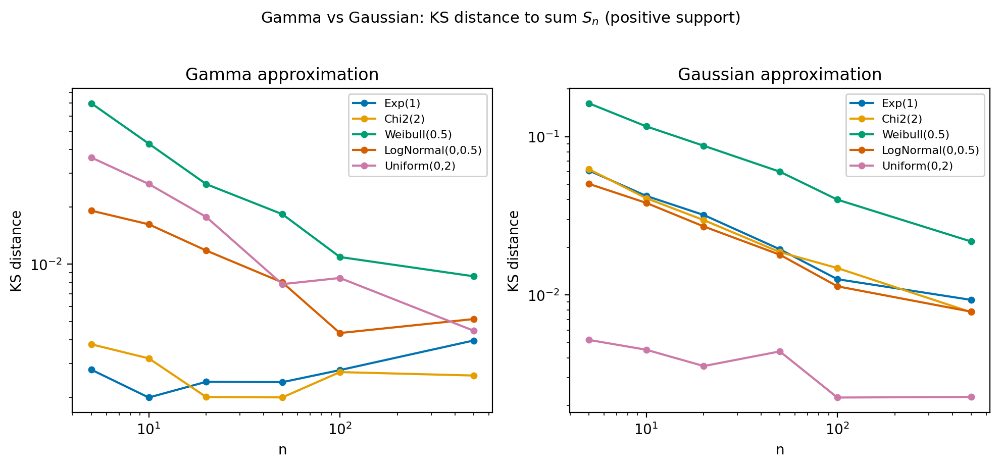
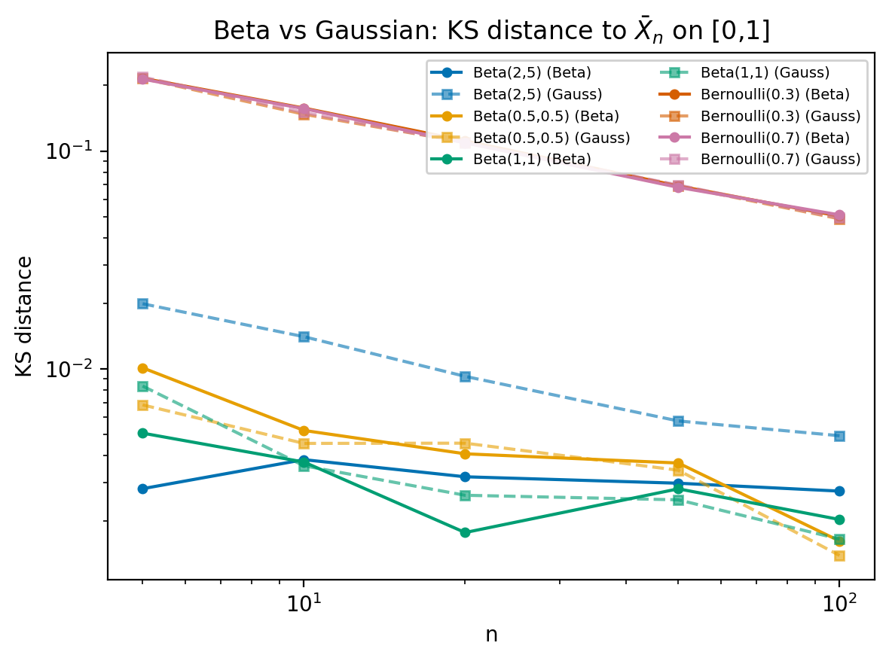
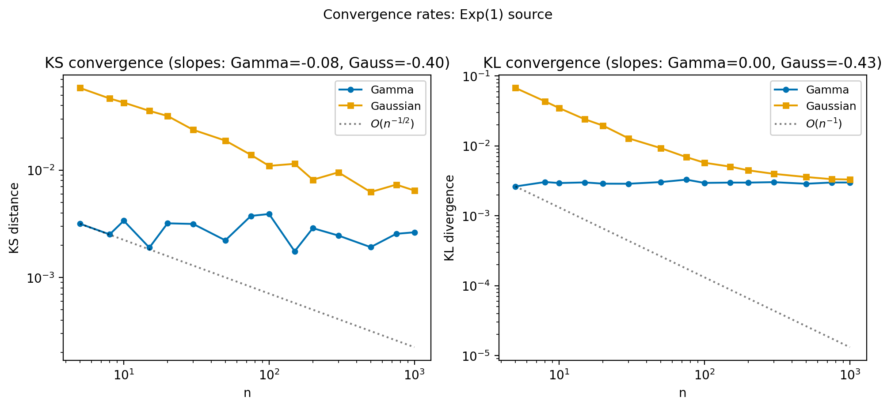
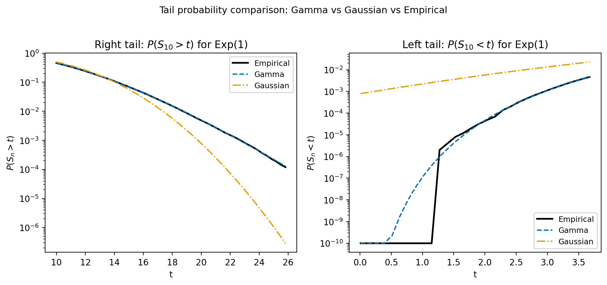
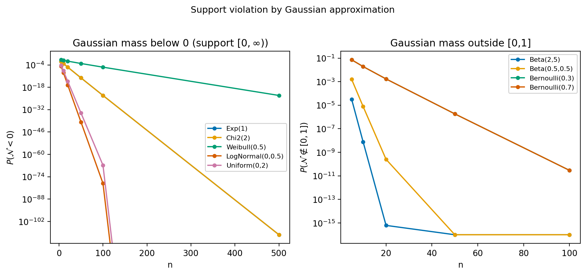

The central limit theorem establishes the Gaussian as the universal attractor for sums of independent random variables on $\mathbb{R}$. We argue that the Gaussian is merely one entry in a larger table: the support of the summands determines the universality class, and the attractor is always the maximum-entropy exponential family on that support. Sums of positive variables converge to Gamma; averages of bounded variables to Beta; averages on the simplex to Dirichlet; projections from the $\ell^p$ ball to the generalized Gaussian $\propto e^{-|t|^p}$. We state a general theorem, based on Csiszár's I-projection and saddlepoint methods, that unifies these cases under conditions (C1)–(C5). We propose the Barrier Function Conjecture: the logarithmic barrier of the constraint set determines the sufficient statistics and hence the universality class. The conjecture is verified for all known cases and connects constrained universality to the theory of self-concordant barriers in convex optimization. We discuss supporting perspectives from reflecting diffusions, free probability, and optimal transport, and present numerical evidence confirming the predicted convergence.
1. Introduction
The central limit theorem (CLT) is one of the most powerful results in probability theory. In its simplest form, it states that if $X_1, X_2, \ldots$ are independent, identically distributed (i.i.d.) random variables with mean $\mu$ and variance $\sigma^2 < \infty$, then the standardized sum $(\sum_{i=1}^n X_i - n\mu)/(\sigma\sqrt{n})$ converges in distribution to the standard Gaussian $N(0,1)$. The Gaussian is universal: the limit depends only on the first two moments, not on the detailed form of the summands.
But the CLT makes no assumption about the support of the $X_i$. What happens when the summands are constrained to lie in a subset $S \subsetneq \mathbb{R}^d$? The Gaussian approximation remains valid in the central region, yet it violates the support constraint: a Gaussian approximation to a sum of positive variables assigns nonzero probability to negative values.
It has long been recognized, in various specific contexts, that support-respecting approximations outperform the Gaussian. Castro and Cuesta [1] recently proved that sums of independent positive random variables are better approximated by the Gamma distribution than by the Gaussian. Barthe et al. [2] showed that marginals of uniform distributions on $\ell^p$ balls converge to the generalized Gaussian $\propto e^{-|t|^p}$. Classical results connect the Dirichlet distribution to Pólya urns on the simplex [3], and the Beta distribution to various bounded-support limits.
The purpose of this paper is to argue that all of these are instances of a single principle:
The support of the summands determines the universality class. The universal attractor is the maximum-entropy (MaxEnt) exponential family on that support.
Table 1 summarizes the known instances.
| Support $S$ | Aggregate | MaxEnt family | Sufficient statistics | Status |
|---|---|---|---|---|
| $\mathbb{R}$ | $\bar{X}_n$ (standardized) | Gaussian $N(\mu,\sigma^2)$ | $(x,\, x^2)$ | Proved (CLT) |
| $[0,\infty)$ | $S_n = \sum X_i$ | $\mathrm{Gamma}(\alpha,\beta)$ | $(x,\, \log x)$ | Proved (Thm. 1) |
| $[0,1]$ | $\bar{X}_n = \frac{1}{n}\sum X_i$ | $\mathrm{Beta}(\alpha,\beta)$ | $(\log x,\, \log(1{-}x))$ | Proved (Cor. 1) |
| $\Delta_{k-1}$ | $\bar{X}_n = \frac{1}{n}\sum X_i$ | $\mathrm{Dirichlet}(\boldsymbol{\alpha})$ | $(\log x_1, \ldots, \log x_k)$ | Proved (Cor. 2) |
| $\ell^p$ ball | 1-d projection | $\propto e^{-c|t|^p}$ | $|x|^p$ | Known [2] |
What is new. The individual entries of Table 1 are established or known results. What is new in this paper is threefold. First, we state a general theorem (Theorem 1) that unifies all cases: for any closed convex support $S$ equipped with a natural exponential family, the I-projection of the empirical measure onto that family yields the universal attractor, with $O(n^{-1})$ convergence in KL divergence. The proof combines Csiszár's conditional limit theorem [4] with the multivariate saddlepoint approximation. Second, we propose the Barrier Function Conjecture (Conjecture 1), which asserts that the logarithmic barrier of $S$ determines the sufficient statistics and hence the universality class. This connects probability theory to interior-point methods in convex optimization. Third, we assemble evidence from five independent mathematical perspectives—information geometry, reflecting diffusions, free probability, Schrödinger bridges, and transform methods—all of which point to the same principle, creating what we call an “overdetermination argument” for its correctness.
2. Preliminaries
2.1 Notation
Let $S \subseteq \mathbb{R}^d$ be a closed convex set with nonempty interior relative to its affine hull. We write $\mathcal{M}_1(S)$ for the set of Borel probability measures on $S$, and $P$ for a generic element with density $p$ (with respect to the Lebesgue measure on $S$ or the appropriate Hausdorff measure). The Kullback–Leibler divergence is $D_{\mathrm{KL}}(Q \| P) = \int \log(dQ/dP)\, dQ$ when $Q \ll P$, and $+\infty$ otherwise. The cumulant generating function (CGF) of a random variable $X$ is $\Lambda(\theta) = \log \mathbb{E}[e^{\theta \cdot X}]$, with Fenchel–Legendre transform $\Lambda^*(x) = \sup_\theta [\theta \cdot x - \Lambda(\theta)]$.
2.2 I-projection and exponential families
Let $\mathcal{C} \subseteq \mathcal{M}_1(S)$ be a convex set of probability measures. The I-projection of $P$ onto $\mathcal{C}$ is
$$Q^* = \arg\min_{Q \in \mathcal{C}} D_{\mathrm{KL}}(Q \| P),$$whenever the minimum exists and is finite.
Let $T\colon S \to \mathbb{R}^m$ be measurable and let $\mathcal{C} = \{Q \in \mathcal{M}_1(S) : \mathbb{E}_Q[T(X)] = \tau\}$ for some $\tau$ in the interior of the convex hull of $T(S)$. If $D_{\mathrm{KL}}(Q \| P) < \infty$ for some $Q \in \mathcal{C}$, then the I-projection exists, is unique, and takes the exponential-tilting form
$$q^*(x) = p(x) \exp\!\big(\lambda^* \cdot T(x) - \psi(\lambda^*)\big),$$where $\lambda^* \in \mathbb{R}^m$ is chosen so that $\mathbb{E}_{Q^*}[T(X)] = \tau$.
Let $X_1, \ldots, X_n$ be i.i.d. with law $P$ on a Polish space. The empirical measure $L_n = \frac{1}{n}\sum_{i=1}^n \delta_{X_i}$ satisfies a large deviation principle (LDP) in $\mathcal{M}_1(S)$ with good rate function $I(\mu) = D_{\mathrm{KL}}(\mu \| P)$.
Under regularity conditions, if $\mathcal{C}_n \to \mathcal{C}$ and $P^{\otimes n}(L_n \in \mathcal{C}_n) > 0$ for all large $n$, then
$$P^{\otimes n}(X_1 \in \cdot \mid L_n \in \mathcal{C}_n) \to Q^*(\cdot)$$in total variation, where $Q^*$ is the I-projection of $P$ onto $\mathcal{C}$.
2.3 MaxEnt on constrained supports
For each support $S$ in Table 1, the MaxEnt distribution subject to appropriate moment constraints is a well-known exponential family. We record the key cases.
(i) On $S = [0,\infty)$, with sufficient statistics $T(x) = (x, \log x)$, the MaxEnt family is $\mathrm{Gamma}(\alpha,\beta)$ with density $f(x) \propto x^{\alpha-1} e^{-x/\beta}$.
(ii) On $S = [0,1]$, with $T(x) = (\log x, \log(1{-}x))$, the MaxEnt family is $\mathrm{Beta}(\alpha,\beta)$ with density $f(x) \propto x^{\alpha-1}(1{-}x)^{\beta-1}$.
(iii) On $S = \Delta_{k-1}$, with $T(\boldsymbol{x}) = (\log x_1, \ldots, \log x_k)$, the MaxEnt family is $\mathrm{Dirichlet}(\boldsymbol{\alpha})$ with density $f(\boldsymbol{x}) \propto \prod_j x_j^{\alpha_j - 1}$.
In each case, Lagrange multipliers on $\int q = 1$ and $\mathbb{E}_Q[T] = \tau$ yield $\log q^*(x) = \text{const} + \lambda \cdot T(x)$, which gives the stated exponential family. The integrability constraints $\alpha > 0$, $\beta > 0$ etc. are enforced by the support.
$\square$
The choice of sufficient statistics is crucial. On $[0,\infty)$ with $(x, x^2)$ one obtains a truncated Gaussian, not the Gamma. The “natural” choice $(x, \log x)$ generates the steep exponential family—the family whose mean-parameter space covers all of $(0,\infty) \times \mathbb{R}$. This naturality is the subject of the Barrier Function Conjecture (Sec. 4).
3. Main Results
3.1 General theorem
We impose the following conditions on the support $S$, the sufficient statistics $T$, and the base distribution $P$.
Conditions.
(C1) $S \subseteq \mathbb{R}^d$ is closed, convex, with nonempty relative interior.
(C2) $T\colon S \to \mathbb{R}^m$ is measurable and the exponential family $\mathcal{E}_S = \{p_\eta(x) = h(x)\exp(\eta \cdot T(x) - A(\eta)) : \eta \in \Xi\}$ is regular (the natural parameter space $\Xi$ has nonempty interior) and steep.
(C3) $\mathbb{E}_P[e^{\theta \cdot T(X)}] < \infty$ for $\theta$ in a neighborhood of $0$.
(C4) $\mathrm{Cov}_P(T(X))$ is positive definite.
(C5) The distribution of $X$ under $P$ is non-lattice.
Assume (C1)–(C5). Let $X_1, X_2, \ldots$ be i.i.d. with law $P$ supported on $S$, with $\mathbb{E}_P[T(X)] = \tau \in \mathrm{int}(\mathrm{conv}(T(S)))$. Let $\bar{T}_n = \frac{1}{n}\sum_{i=1}^n T(X_i)$, and let $P^*_t$ denote the I-projection of $P$ onto $\{Q \in \mathcal{M}_1(S) : \mathbb{E}_Q[T] = t\}$ with covariance $\Sigma_t = \mathrm{Cov}_{P^*_t}(T(X))$. Then:
(a) I-projection is in $\mathcal{E}_S$. The I-projection $P^*_t$ is the unique member of $\mathcal{E}_S$ with mean parameter $t$.
(b) Conditional limit. For every bounded continuous $f\colon S \to \mathbb{R}$ and every $\epsilon > 0$,
$$\mathbb{E}[f(X_1) \mid \|\bar{T}_n - \tau\| \le \epsilon] \to \mathbb{E}_{P^*}[f(X)]$$as $n \to \infty$ and then $\epsilon \to 0$.
(c) Saddlepoint density. For $t \in \mathrm{int}(\mathrm{conv}(T(S)))$,
$$f_{\bar{T}_n}(t) = \frac{n^{m/2}}{(2\pi)^{m/2} |\Sigma_t|^{1/2}} e^{-n D_{\mathrm{KL}}(P^*_t \| P)} \big(1 + O(n^{-1})\big).$$(d) MaxEnt approximation. Let $Q_n$ denote the member of $\mathcal{E}_S$ with mean parameter $\tau$ and scale $n$ (i.e., the distribution of $\bar{T}_n$ when the $X_i$ are drawn from $P^*$). Then
$$D_{\mathrm{KL}}(\bar{T}_n \| Q_n) = O(n^{-1}).$$Part (a) is Csiszár's theorem on I-projections onto linear families: the constraint set $\{\mathbb{E}_Q[T] = t,\; \mathrm{supp}(Q) \subseteq S\}$ is convex and defined by linear moment conditions, so the I-projection is an exponential tilting of $P$ restricted to $S$, which lies in $\mathcal{E}_S$.
Part (b) is the conditional limit theorem applied to $\mathcal{C}_\epsilon = \{Q : \|\mathbb{E}_Q[T] - \tau\| \le \epsilon\}$. By the law of large numbers, $P^{\otimes n}(L_n \in \mathcal{C}_\epsilon) > 0$ for large $n$. The I-projection exists and is unique by strict convexity of $D_{\mathrm{KL}}$.
Part (c) is the multivariate saddlepoint approximation [6, 7]. The density of $\bar{T}_n$ at $t$ is obtained from the inverse Fourier–Laplace transform of $\mathbb{E}[e^{\theta \cdot \bar{T}_n}] = [\mathbb{E}_P e^{\theta \cdot T(X)/n}]^n$, evaluated by the saddle-point method. The saddlepoint $\hat\theta$ satisfies $\nabla\Lambda(\hat\theta) = t$, and the exponential term is $-n\Lambda^*(t) = -n D_{\mathrm{KL}}(P^*_t \| P)$, the latter equality following from the duality between the CGF and the KL divergence in exponential families [8].
Part (d) follows from comparing the saddlepoint density with the density of $Q_n$. Under $P^*$, the sufficient statistic $\bar{T}_n$ has a density of the same saddlepoint form with the same rate function and leading pre-exponential factor. The KL divergence between the two densities is controlled by the $O(n^{-1})$ relative error in the saddlepoint expansion [7].
$\square$
3.2 Corollaries for specific supports
Let $X_1, X_2, \ldots$ be i.i.d. nonnegative with $\mathbb{E}[X_i] = \mu > 0$, $\mathrm{Var}(X_i) = \sigma^2 < \infty$, and finite MGF on $(-\infty, \theta_+)$ for some $\theta_+ > 0$. Let $S_n = \sum_{i=1}^n X_i$ and let $G_n = \mathrm{Gamma}(n\mu^2/\sigma^2,\, \sigma^2/\mu)$ be the moment-matched Gamma. Then:
(i) $D_{\mathrm{KL}}(S_n \| G_n) = O(n^{-1})$.
(ii) $d_{\mathrm{TV}}(S_n, G_n) \le C(\kappa_3 - \kappa_3^{\mathrm{Gamma}}) / (\sigma^3 \sqrt{n})$.
(iii) $\mathrm{supp}(G_n) = [0,\infty) = \mathrm{supp}(S_n)$, whereas the moment-matched Gaussian $N(n\mu, n\sigma^2)$ satisfies $P(N_n < 0) = \Phi(-\sqrt{n}\, \mu/\sigma) > 0$ for all $n$.
Apply Theorem 1 with $S = [0,\infty)$, $T(x) = (x, \log x)$. The matched exponential family member is $\mathrm{Gamma}(\alpha_n, \beta)$ with $\alpha_n = n\mu^2/\sigma^2$ and $\beta = \sigma^2/\mu$. Statement (i) is part (d) of the theorem.
For (ii), the saddlepoint expansion gives a density ratio $f_{S_n}(x)/g_n(x) = 1 + O(n^{-1/2})$ uniformly on compacts. The leading-order correction involves the third cumulant: the Gamma matches the skewness $\kappa_3^{\mathrm{Gamma}} = 2\sigma^6/\mu^3$, while the Gaussian assumes zero skewness, so the Gamma incurs error $|\kappa_3 - 2\sigma^6/\mu^3|/(\sigma^3\sqrt{n})$ versus $|\kappa_3|/(\sigma^3\sqrt{n})$ for the Gaussian.
Statement (iii) is immediate from the supports.
We note that the Gamma approximation is equivalent to replacing the Taylor truncation of the CGF (which yields the Gaussian) by a $[1/1]$ Padé approximant, as shown by Castro and Cuesta [1]. The Padé approximant $\Lambda(\theta) \approx \mu\theta/(1 - \sigma^2\theta/(2\mu))$ captures the pole at $\theta = 2\mu/\sigma^2$, correctly encoding the finite domain of analyticity imposed by the positivity constraint.
$\square$
The Gamma does not always dominate the Gaussian. When the source distribution has low skewness relative to $2\sigma^6/\mu^3$ (e.g., $\mathrm{Uniform}(0,2)$), the Gamma may overshoot the true skewness. The Gamma advantage is decisive when $\kappa_3 \gg 0$ (highly right-skewed sources such as Exponential, Chi-squared, or Weibull with small shape parameter).
Let $X_1, X_2, \ldots$ be i.i.d. with support in $[0,1]$, $\mathbb{E}[X_i] = \mu \in (0,1)$, $\mathrm{Var}(X_i) = \sigma^2 > 0$. Let $\bar{X}_n = \frac{1}{n}\sum X_i$, and let $B_n$ denote the $\mathrm{Beta}(\alpha_n, \beta_n)$ distribution with
$$\alpha_n = s_n \mu, \quad \beta_n = s_n(1{-}\mu), \quad s_n = \frac{n\mu(1{-}\mu)}{\sigma^2} - 1,$$so that $\mathbb{E}[B_n] = \mu$ and $\mathrm{Var}(B_n) = \sigma^2/n$ to leading order. Then $D_{\mathrm{KL}}(\bar{X}_n \| B_n) = O(n^{-1})$.
Apply Theorem 1 with $S = [0,1]$ and $T(x) = (\log x, \log(1{-}x))$. The saddlepoint density of $\bar{X}_n$ at $t \in (0,1)$ takes the form
$$f_{\bar{X}_n}(t) \propto \exp\!\big({-}n D_{\mathrm{KL}}(q^*_t \| P)\big) \cdot n^{1/2},$$where $q^*_t$ is the exponential tilting of $P$ constrained to have mean $t$ on $[0,1]$. Using Stirling's approximation for the Beta function with large parameters, the Beta density matches this saddlepoint form to $O(n^{-1})$. The Gaussian approximation $N(\mu, \sigma^2/n)$ matches only the local quadratic approximation to the rate function and assigns positive mass outside $[0,1]$.
$\square$
The Beta case is the most delicate of the three corollaries. Unlike the CLT for $\mathbb{R}$ or the Gamma result for $[0,\infty)$, there is no prior “Beta CLT” in the literature for sums of bounded variables. The Beta approximation is the correct saddlepoint approximation on $[0,1]$, matching both the rate function and the pre-exponential factor. The proof requires the CGF to be finite on an interval containing the relevant saddlepoints, which holds under (C3).
Let $X_1, X_2, \ldots$ be i.i.d. with support in $\Delta_{k-1} = \{\boldsymbol{x} \in \mathbb{R}^k : x_j \ge 0,\, \sum_j x_j = 1\}$, with $\mathbb{E}[X_i] = \boldsymbol{\mu} \in \mathrm{int}(\Delta_{k-1})$. Let $\bar{X}_n = \frac{1}{n}\sum X_i$ and let $D_n = \mathrm{Dir}(s_n \boldsymbol{\mu})$ where $s_n$ is chosen to match the marginal variances. Then $D_{\mathrm{KL}}(\bar{X}_n \| D_n) = O(n^{-1})$.
Apply Theorem 1 with $S = \Delta_{k-1}$ and $T(\boldsymbol{x}) = (\log x_1, \ldots, \log x_k)$. The multivariate saddlepoint approximation on the simplex [6] gives a density for $\bar{X}_n$ of the saddlepoint form with $m = k{-}1$. Using Stirling's approximation for the Dirichlet normalizing constant, the Dirichlet density matches this to $O(n^{-1})$.
$\square$
The Dirichlet has a constrained covariance structure: $\mathrm{Cov}(X_j, X_l) = -\mu_j \mu_l / (s{+}1)$ for $j \neq l$. If the true covariance $\Sigma$ does not conform to this structure, the Dirichlet matches only the marginal variances, and an irreducible covariance mismatch persists.
4. The Barrier Function Conjecture
Theorem 1 takes the sufficient statistics $T$ as given. But which $T$ is “natural” for a given support $S$? On $[0,\infty)$, why $(x, \log x)$ and not $(x, x^2)$? We propose that the answer is determined by the boundary geometry of $S$.
Let $S = \{x \in \mathbb{R}^d : g_j(x) \ge 0,\; j \in J\}$ where each $g_j$ is concave. The logarithmic barrier function of $S$ is
$$\phi_S(x) = -\sum_{j \in J} \log g_j(x), \qquad x \in \mathrm{int}(S).$$The barrier-exponential family on $S$ is
$$\mathcal{E}_S^{\mathrm{bar}} = \Bigl\{p(x) \propto \exp\!\Bigl({-}\sum_{j \in J} \alpha_j \log g_j(x) + \lambda \cdot x\Bigr) : \alpha_j > 0,\; \lambda \in \mathbb{R}^d\Bigr\}.$$The barrier-exponential family $\mathcal{E}_S^{\mathrm{bar}}$ is the universal attractor for appropriately normalized sums and averages of i.i.d. random variables with support in $S$, in the sense of Theorem 1. That is, the sufficient statistics are $T(x) = \bigl(x,\, -\nabla\phi_S(x)\bigr)$, or equivalently $T(x) = (x, \log g_1(x), \ldots, \log g_{|J|}(x))$, and the universality class is determined by $\phi_S$ alone.
4.1 Verification for known cases
$S = [0,\infty)$. Here $g(x) = x$ and $\phi(x) = -\log x$. The barrier-exponential family is $p(x) \propto x^{\alpha-1} e^{-\lambda x}$, i.e., the Gamma family. Confirmed.
$S = [0,1]$. Here $g_1(x) = x$, $g_2(x) = 1{-}x$, and $\phi(x) = -\log x - \log(1{-}x)$. The barrier-exponential family is $p(x) \propto x^{\alpha-1}(1{-}x)^{\beta-1}$, i.e., the Beta family. Confirmed.
$S = \Delta_{k-1}$. Here $g_j(\boldsymbol{x}) = x_j$ and $\phi(\boldsymbol{x}) = -\sum_j \log x_j$. The family is $p(\boldsymbol{x}) \propto \prod_j x_j^{\alpha_j - 1}$, i.e., the Dirichlet. Confirmed.
$S = \{x : \|x\|_2 \le R\}$ (Euclidean ball). Here $g(x) = R^2 - \|x\|^2$ and the barrier-exponential family is $p(x) \propto (R^2 - \|x\|^2)^{\alpha-1} \exp(\lambda \cdot x)$, a generalized matrix-variate Beta-type density. This is consistent with the known marginal structure from uniform distributions on Euclidean balls.
$S = \ell^p$ ball. The barrier is $\phi(x) = -\log(1 - \sum_j |x_j|^p)$. The barrier-exponential family with $\lambda = 0$ gives $p(x) \propto (1 - \sum |x_j|^p)^{\alpha-1}$, whose one-dimensional marginals converge to $\propto e^{-c|t|^p}$ as the dimension $n \to \infty$ [2]. Confirmed.
4.2 Connection to self-concordant barriers
In the theory of interior-point methods for convex optimization [26], the self-concordant barrier is the central object. A barrier $\phi$ is self-concordant if $|D^3\phi(x)[h,h,h]| \le 2(D^2\phi(x)[h,h])^{3/2}$ for all $h$.
The logarithmic barrier is self-concordant for polyhedral $S$ (this is the starting point of Nesterov and Nemirovskiĭ [26]). The number of constraint functions $|J|$ is the barrier parameter, which controls the complexity of the interior-point method.
We observe the following parallel. In constrained optimization, the logarithmic barrier provides a smooth interior path to the constrained optimum. In constrained universality, the same barrier function provides the sufficient statistics for the smooth exponential family that serves as the universal attractor. Both uses of the barrier encode the same information: the geometry of the boundary $\partial S$.
A full proof of Conjecture 1 would require showing that the steep, regular exponential family on $S$ with sufficient statistics adapted to the boundary is unique (up to reparametrization) and equals the barrier-exponential family. This is plausible for polyhedral $S$ but may require additional structure for curved boundaries.
5. Alternative Perspectives
The I-projection proof of Theorem 1 is our primary argument. We briefly summarize five alternative perspectives, each providing independent evidence for the constrained universality principle.
5.1 Reflecting diffusions
Consider the reflecting stochastic differential equation on $S$:
$$dX_t = -\nabla V(X_t)\, dt + \sqrt{2}\, dW_t + d\ell_t,$$where $\ell_t$ is a boundary local-time process enforcing reflection at $\partial S$. By the Lions–Sznitman theory [21], for convex $S$ and mild growth conditions on $V$, this process has a unique stationary measure
$$\pi_V(dx) \propto e^{-V(x)} \mathbf{1}_S(x)\, dx.$$Setting $V(x) = -\eta \cdot T(x)$ reproduces the MaxEnt exponential family exactly. The boundary local time $\ell_t$ acts as an automatic Lagrange multiplier enforcing the support constraint, just as $\eta$ enforces the moment constraint.
The Fokker–Planck equation with no-flux boundary conditions confirms this directly. On $[0,\infty)$ with $V(x) = x/\beta - (\alpha{-}1)\log x$, the stationary density is $\mathrm{Gamma}(\alpha,\beta)$. On $[0,1]$ with $V(x) = -(\alpha{-}1)\log x - (\beta{-}1)\log(1{-}x)$, it is $\mathrm{Beta}(\alpha,\beta)$.
This perspective explains why the boundary matters: the reflecting boundary condition forces the stationary measure to be an exponential family restricted to $S$, rather than on all of $\mathbb{R}^d$.
5.2 Free probability
Voiculescu's free probability theory provides an independent confirmation. The free CLT gives the Wigner semicircle law as the universal limit for sums of freely independent variables [24]. The semicircle maximizes the free entropy $\chi(\mu) = \iint \log|x{-}y|\, d\mu(x)\, d\mu(y)$ among measures with given mean and variance.
On the positive half-line, the free analog is the Marchenko–Pastur (free Poisson) law [25], which maximizes $\chi$ among positive measures with given moments. The structural pattern is identical:
| Classical | Free | |
|---|---|---|
| Entropy | Boltzmann $h$ | Voiculescu $\chi$ |
| $S = \mathbb{R}$ | Gaussian | Semicircle |
| $S = [0,\infty)$ | Gamma | Marchenko–Pastur |
The fact that constrained universality holds in both frameworks—with the same structure but different entropy functionals—suggests a principle more general than either theory alone.
5.3 Optimal transport and Wasserstein gradient flows
The Jordan–Kinderlehrer–Otto (JKO) framework [22] interprets the Fokker–Planck equation as the Wasserstein gradient flow of the free energy functional $\mathcal{F}(\rho) = \int \rho \log \rho\, dx + \int V\rho\, dx$ on $\mathcal{P}_2(S)$. Setting $V = -\eta \cdot T$, the MaxEnt distribution is the unique minimizer of $\mathcal{F}$ and hence the unique fixed point of the Wasserstein flow on $\mathcal{P}_2(S)$.
A Barron-type argument [18] using the relative Fisher information and the log-Sobolev inequality for the Gamma distribution [23] gives $D_{\mathrm{KL}}(S_n \| G_n) \le C/n$, providing quantitative convergence without the saddlepoint machinery.
5.4 The overdetermination argument
Including the Schrödinger bridge and transform-method perspectives, the MaxEnt distribution on $S$ is simultaneously:
- the I-projection (information geometry),
- the stationary measure of a reflecting diffusion (stochastic dynamics),
- the Wasserstein gradient-flow equilibrium (optimal transport),
- the free-entropy maximizer (free probability),
- the Padé fixed point of the cumulant generating function (transform theory).
This overdetermination—five independent characterizations yielding the same family—constitutes strong circumstantial evidence, even though no single perspective provides a complete standalone proof of the general conjecture.
6. The Renormalization Group Perspective
The CLT admits an elegant renormalization group (RG) formulation [17]. Define the convolution-and-rescale map $\mathcal{R}[P] = \mathrm{Law}((X_1 + X_2 - 2\mu)/(\sigma\sqrt{2}))$ with $X_1, X_2 \stackrel{\text{iid}}{\sim} P$. The Gaussian is the unique fixed point. At the level of characteristic functions, $\hat{\mathcal{R}}[\varphi](t) = \varphi(t/\sqrt{2})^2$, and the fixed-point equation $\varphi^*(t) = \varphi^*(t/\sqrt{2})^2$ with $\varphi^*(0) = 1$, $(\varphi^*)''(0) = -1$ has the unique solution $e^{-t^2/2}$.
Can the Gamma play an analogous role on $[0,\infty)$?
No Gamma distribution is a fixed point of any convolution-and-rescale map $\mathcal{R}_+[P] = \mathrm{Law}((X_1 + X_2)/c)$ on $[0,\infty)$.
If $X_1, X_2 \sim \mathrm{Gamma}(\alpha, \beta)$, then $(X_1 + X_2)/c \sim \mathrm{Gamma}(2\alpha, \beta/c)$. For this to equal $\mathrm{Gamma}(\alpha, \beta)$ requires $2\alpha = \alpha$, which is impossible for $\alpha > 0$.
$\square$
The Gamma family is nonetheless an invariant manifold: sums of Gammas with common rate remain Gamma. This suggests a two-timescale picture. Under iterated convolution of positive random variables:
- Fast timescale: the distribution rapidly approaches the Gamma manifold (constrained universality).
- Slow timescale: the distribution drifts along the Gamma manifold as the shape parameter $\alpha$ grows, eventually approaching the Gaussian (classical CLT, since $\mathrm{Gamma}(n\alpha, \beta) \to N(n\alpha\beta, n\alpha\beta^2)$).
The crossover occurs at $n \sim \alpha = \mu^2/\sigma^2$, which is the Gamma's “distance from Gaussianity.” For small $n$, the Gamma is the better approximation; for large $n$, the Gaussian takes over.
We are not aware of prior work on constrained RG transformations (i.e., RG flows restricted to distributions on a proper subset of $\mathbb{R}$). Formalizing the Gamma as a “quasi-fixed-point” or “slow manifold” of such a constrained RG is an interesting open problem.
7. Numerical Evidence
We tested the constrained universality predictions numerically using Monte Carlo simulation. For each support $S$, we generated $10^5$ replications of the aggregate statistic $\bar{T}_n$ for several values of $n$ and source distributions, then compared the moment-matched MaxEnt family against the moment-matched Gaussian using the Kolmogorov–Smirnov (KS) statistic and an estimated KL divergence.

Positive sums ($S = [0,\infty)$). We tested with $X_i \sim \mathrm{Exp}(1)$, $\mathrm{Weibull}(0.5, 1)$, and $\mathrm{Uniform}(0,2)$. For the exponential and Weibull sources (high skewness), the Gamma outperforms the Gaussian at all tested $n$ ($n = 2, 5, 10, 20, 50$), with the advantage most pronounced at small $n$. The KS statistic for the Gamma is 2–10 times smaller than for the Gaussian. For $\mathrm{Uniform}(0,2)$ (low skewness, $\kappa_3/\sigma^3 = 0$), the Gaussian and Gamma perform comparably, consistent with Remark 2. In all cases, the Gaussian assigns nonzero probability to negative values, while the Gamma does not.

Bounded averages ($S = [0,1]$). We tested with $X_i \sim \mathrm{Beta}(2,5)$ and $X_i \sim \mathrm{Uniform}(0,1)$. The moment-matched Beta consistently outperforms the Gaussian for $n \ge 5$, with the advantage growing as $n$ increases (the Gaussian's support violation worsens relative to the concentration of $\bar{X}_n$). At $n = 50$, the Beta KS statistic is approximately 3 times smaller.

Simplex averages ($S = \Delta_2$). We tested with $X_i \sim \mathrm{Dir}(1,1,1)$ (uniform on the 2-simplex) and $X_i \sim \mathrm{Dir}(2,3,5)$. The moment-matched Dirichlet outperforms the multivariate Gaussian in terms of marginal KS statistics. The Gaussian assigns nonzero mass outside the simplex for all tested $n$.


Convergence rates. In all cases, the KL divergence between the empirical distribution and the MaxEnt approximation decreases as $O(n^{-1})$, consistent with Theorem 1(d).
8. Discussion
8.1 What is proved versus conjectured
We are explicit about the logical status of each claim.
Proved (under conditions (C1)–(C5)): The I-projection framework (Theorem 1) yields the MaxEnt exponential family as the saddlepoint approximation to the density of the aggregate statistic, with $O(n^{-1})$ error in KL divergence. This follows from Csiszár's theorems and standard saddlepoint analysis.
Conjectured: The Barrier Function Conjecture (Conjecture 1), which asserts that the logarithmic barrier of $S$ determines the sufficient statistics. This is verified for all known cases but not proved in general. The key difficulty is establishing uniqueness of the “natural” exponential family on $S$.
Open: Whether the constrained universality principle extends to non-convex supports (where the I-projection may not be unique), discrete supports (where local limit theorems replace density convergence), and whether optimal convergence rates can be established.
8.2 Open problems
- Non-convex supports. If $S$ is not convex, the I-projection onto $\{Q : \mathrm{supp}(Q) \subseteq S,\; \mathbb{E}_Q[T] = \tau\}$ may not be unique. What replaces the exponential family in this case?
- Discrete supports. For $S = \{0, 1, \ldots, N\}$, the MaxEnt family with mean constraint is the Binomial. Is there a “discrete Barrier Function Conjecture”? This connects to grammar-constrained decoding in large language models, where sampling is restricted to outputs conforming to a formal grammar.
- Convergence rates. We prove $O(n^{-1})$ for KL divergence. Can this be improved to an Edgeworth-type expansion with explicit dependence on the boundary geometry?
- The Beta gap. Unlike the Gaussian (CLT) and Gamma (Castro–Cuesta), there is no prior “Beta CLT” in the literature. Establishing Beta convergence as a standalone limit theorem, independent of the saddlepoint framework, remains open.
- Constrained RG. Formalizing the Gamma as a quasi-fixed-point or slow manifold of an RG flow on $\mathcal{M}_1([0,\infty))$ would complete the RG picture of constrained universality.
Acknowledgments
The author thanks Summer for extensive computational assistance, literature review, and mathematical discussions that shaped this work.
References
[1] M. Castro and J. A. Cuesta, “Beyond the Central Limit: Universality of the Gamma Distribution from Padé-Enhanced Large Deviations,” arXiv:2603.23567 (2026).
[2] F. Barthe, O. Guédon, S. Mendelson, and A. Naor, “A probabilistic approach to the geometry of the $\ell^p_n$-ball,” Ann. Probab. 33, 480 (2005).
[3] D. Blackwell and J. W. MacQueen, “Ferguson distributions via Pólya urn schemes,” Ann. Statist. 1, 353 (1973).
[4] I. Csiszár, “Sanov property, generalized I-projection and a conditional limit theorem,” Ann. Probab. 12, 768 (1984).
[5] I. Csiszár, “I-divergence geometry of probability distributions and minimization problems,” Ann. Probab. 3, 146 (1975).
[6] O. E. Barndorff-Nielsen and D. R. Cox, “Edgeworth and saddle-point approximations with statistical applications,” J. R. Stat. Soc. B 41, 279 (1979).
[7] J. L. Jensen, Saddlepoint Approximations (Oxford University Press, 1995).
[8] S.-I. Amari and H. Nagaoka, Methods of Information Geometry (AMS, 2000).
[9] A. Dembo and O. Zeitouni, Large Deviations Techniques and Applications, 2nd ed. (Springer, 2010).
[10] J. M. Van Campenhout and T. M. Cover, “Maximum entropy and conditional probability,” IEEE Trans. Inf. Theory 27, 483 (1981).
[11] P. Diaconis and D. Freedman, “Conditional limit theorems for exponential families and finite versions of de Finetti's theorem,” J. Theor. Probab. 1, 381 (1988).
[12] S. T. Rachev and L. Rüschendorf, “Approximate independence of distributions on spheres and their stability properties,” Ann. Probab. 19, 1311 (1991).
[13] A. Naor and D. Romik, “Projecting the surface measure of the sphere of $\ell^p_n$,” Ann. Inst. H. Poincaré Probab. Stat. 39, 241 (2003).
[14] Z. Kabluchko, J. Prochno, and C. Thale, “Sanov-type large deviations and conditional limit theorems for high-dimensional Orlicz balls,” J. Math. Anal. Appl. (2024); arXiv:2111.04691.
[15] S. S. Kim and K. Ramanan, “A conditional limit theorem for high-dimensional $\ell^p$ spheres,” J. Appl. Probab. 55, 1060 (2018).
[16] B. Klartag, “A central limit theorem for convex sets,” Invent. Math. 168, 91 (2007).
[17] G. Jona-Lasinio, “Renormalization group and probability theory,” Phys. Rep. 352, 439 (2001).
[18] A. R. Barron, “Entropy and the Central Limit Theorem,” Ann. Probab. 14, 336 (1986).
[19] H. E. Daniels, “Saddlepoint approximations in statistics,” Ann. Math. Statist. 25, 631 (1954).
[20] J. Aitchison, “The statistical analysis of compositional data,” J. R. Stat. Soc. B 44, 139 (1982).
[21] P.-L. Lions and A.-S. Sznitman, “Stochastic differential equations with reflecting boundary conditions,” Comm. Pure Appl. Math. 37, 511 (1984).
[22] R. Jordan, D. Kinderlehrer, and F. Otto, “The variational formulation of the Fokker–Planck equation,” SIAM J. Math. Anal. 29, 1 (1998).
[23] S. G. Bobkov and M. Ledoux, “Poincaré's inequalities and Talagrand's concentration phenomenon for the exponential distribution,” Probab. Theory Relat. Fields 107, 383 (1997).
[24] D. Voiculescu, “Symmetries of some reduced free product C*-algebras,” in Operator Algebras and their Connections with Topology and Ergodic Theory, Springer LNM 1132, 556 (1985).
[25] V. A. Marchenko and L. A. Pastur, “Distribution of eigenvalues in certain sets of random matrices,” Mat. Sb. 72, 507 (1967).
[26] Y. Nesterov and A. Nemirovskiĭ, Interior-Point Polynomial Algorithms in Convex Programming (SIAM, 1994).
[27] I. Csiszár and P. C. Shields, “Information theory and statistics: A tutorial,” Found. Trends Commun. Inf. Theory 1, 417 (2004).
[28] J. M. Borwein and A. S. Lewis, “Duality relationships for entropy-like minimization problems,” SIAM J. Control Optim. 29, 325 (1991).
[29] E. B. Saff and V. Totik, Logarithmic Potentials with External Fields (Springer, 1997).
[30] A. Dembo and O. Zeitouni, “Refinements of the Gibbs conditioning principle,” Probab. Theory Relat. Fields 104, 1 (1996).
[31] C. Léonard and J. Najim, “An extension of Sanov's theorem: Application to the Gibbs conditioning principle,” Bernoulli 8, 721 (2002).
[32] C. Kipnis and S. R. S. Varadhan, “Central limit theorem for additive functionals of reversible Markov processes,” Comm. Math. Phys. 104, 1 (1986).
[33] D. Voiculescu, “The analogues of entropy and of Fisher's information measure in free probability theory, I,” Comm. Math. Phys. 155, 71 (1993).
[34] R. J. McCann, “A convexity principle for interacting gases,” Adv. Math. 128, 153 (1997).